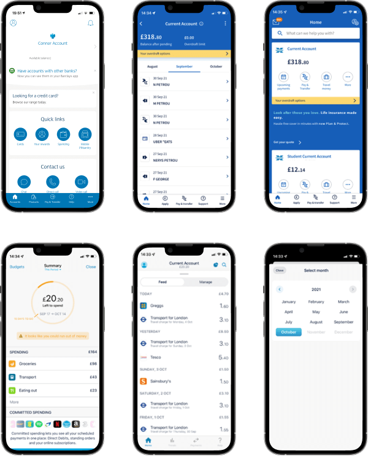
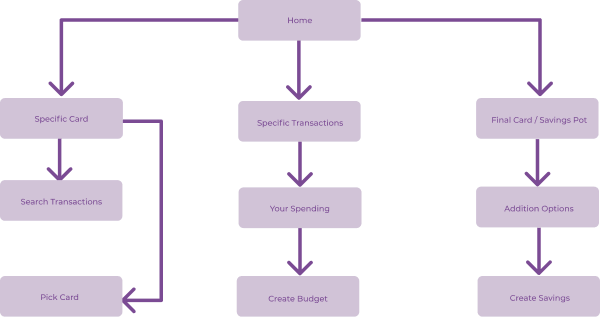
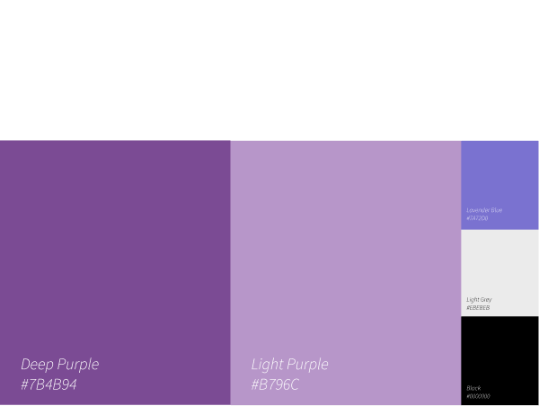
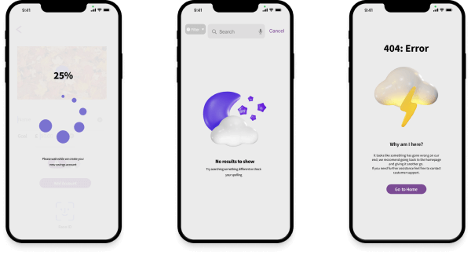
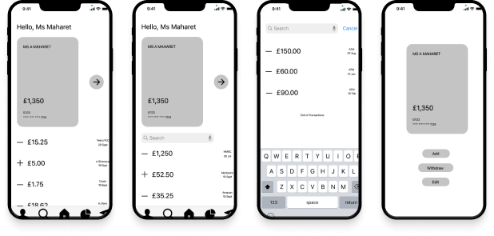
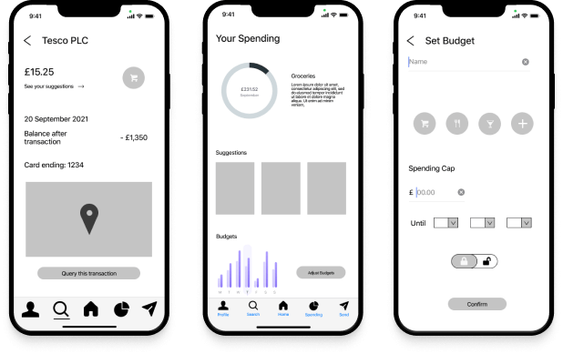
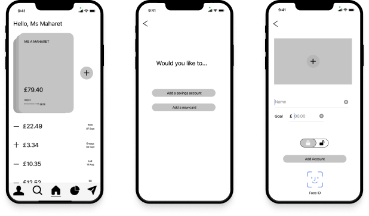
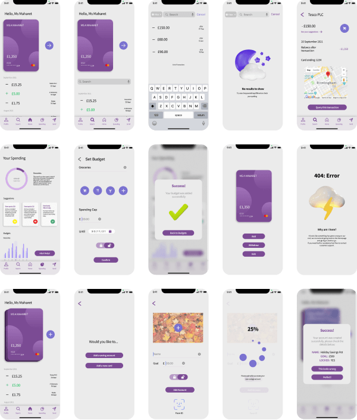

Online Store - Intelligent Mountain
Introduction
This app will be designed for people looking for a card provider that allows them to easily budget and manage their money with savings accounts and multiple cards
Competitor Analysis
A few key competitors stood out whose applications aimed to provide users with a similar service. These apps helped identify common user needs
User Flows
After deciding on key features, it was clear which screens needed to be designed. This distinguished user flows and therefore the formation of initial sketches.
Competitor Analysis (Continued)
From the final sketches the wireframes were formed, with care to include all necessary design patterns required for my app. These screens allow users to complete simple actions with their account such as search for their transactions as well as specific actions on cards More specifically to the users of this app, these screens enable users to easily set budgets on their cards through spending reports. The users will also be able to add new savings accounts in a similar, easy format to adding a budget
Branding
Independent Review
After learning about different types of screens required for a full working protoype, an issue occurred where I discovered that my app was missing a few key screens which would disrupt or prevent users from using the app properly. Therefore, these were designed promptly
User Testing
Using the mid-fidelity wireframes, three users were given a set of tasks to complete where notes would be taken and analysed in order to propose important suggestions for the designs. I felt that user testing could have been further in depth, and more users could have been tested, but due to time constraints I was restricted. However, I still obtained valuable results which were reflected in high fidelity wireframes
  Final Designs
Given the time constraints of the course itself as well as the few hours a week which I had available to complete this project, I had to plan and manage my time constantly to ensure I kept to my deadlines meanwhile creating my designs to a high standard. Therefore, I am extremely pleased with the outcome of my application as it fulfilled all necessary criteria as well as being visually appealing.
